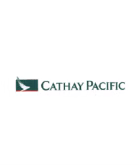
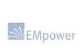
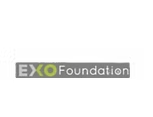
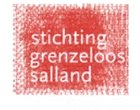
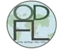

Who Has Helped So Far?
All of our work is funded by charitable donations from institutions, organisations, and individuals. We continue to engage and update our generous donors with our progress by sending them regular reports.
We are humbled to share our key donors and sponsors whose contributions have been most significant in furthering the goals of the East Bali Poverty Project. We thank you for your endless support.
Corporate Partners


- Air Paradise, Bali
- Alila Hotel Group (Bali)
- Allianz Insurance
- Amankila Hotel (Candidasa, Bali)
- Arsyad & Co, Registered Public Accountants, Jakarta
- AsianEgo.com (Bali)
- Bain & Co.
- Bali Padma Hotel through Garis Art Exhibition Organizer
- Bali Paradise Online and William Galt
- Balimoves
- Betty Belts, Donna von Hoesslin, Ventura, California (1% for the Planet Donation)
- Blueline Internet Broadband (Bali)
- Danu Enterprises (USA)
- DHL
- Drum Factory (Bali)
- Ernst & Young
- From Bali to Bala
- Ganesha Bookshop/Books for Bali Project (Bali)
- GHM Hotels, Bali
- Hard Rock Hotel Bali
- It’s a Breeze Property, Dhilharan Sivaratnam & Bertram Daniel
- Illumination (Australia)
- John West (1% for the Planet Donation)
- Kantor Notaris Meiyane Halimatussyadiah, SH (Jakarta)
- Kopernik (Bali)
- Lotus Enterprises (Bali)
- L Hotels & Resort | The Shanti Collection (Bali)
- Maka Hawaii Exports (USA)
- Mandarin Oriental Jakarta
- McFlek Servicepoint B.V., Inc
- PT Bits Bali Video
- PT Sarong Kuta (Bali)
- PT Jalur Nugraha Ekakurir (Bali)
- PT Unilever Indonesia, Tbk
- PT. AquaMarine Diving (Bali)
- PT. Indotraders (Bali)
- Radisson Hotel Bali
- Royal Bank of Scotland
- Sari Tours (Bali)
- Saritaksu Design Communications, Bali
- Scotch & Soda (Holland)
- Sensatia Botanicals (natural soap donation), Bali
- Standard Chartered Bank
- Suryavinyl (Bali)
- Thames Water (Jakarta)
- The Watergarden Hotel (Candidasa, Bali)
- Valhalla Trading (USA)
- Villa Gils (Candidasa, Bali)
- Zurich Insurance
Organizational Partners




- 13th Annual Int’l Symposium on Society & Resource Management, Park City, Utah
- Actie Commissie van de Gereformeerde Kerk van Joure (through Tjeerd Hoekstra)
- American Women’s Association (Jakarta)
- Annika Linden Foundation, UK
- Anton Jurgens Fonds (the Netherlands)
- Australia New Zealand Association (Jakarta)
- Australian Lawyers Surfing Association (ALSA)
- Australian Consulate-General, Bali, Direct Aid Program (DAP)
- Bali Eye Clinic
- Bali International Women’s Association (BIWA)
- Bali Shogaku Kikin (Japan)
- Bamboo Society of Australia
- Bernedice van Berlekom Foundation
- British Chamber of Commerce in Indonesia
- British Community Committee (Jakarta)
- British Embassy, Jakarta, British-Indonesia Small Grant Scheme
- British Women’s Association (Jakarta)
- Clive Walton Memorial Fund
- EXO Foundation
- Emerging Markets Foundation
- Gift from a charity fund in the Netherlands, Leiden
- Indonesia Australia Language Foundation (Bali)
- Indonesian Teachers Association of South Australia
- Inspirasia Foundation
- International Bazaar of the Grand Duchy of Luxembourg
- Island Angels (USA)
- Java St. Andrew Society (Jakarta)
- Linda Garland & The Environmental Bamboo Foundation (EBF)
- Metta Enlightenment Foundation, USA, through Linda Garland of The Environmental Bamboo Foundation of Bali
- Moments of Joy Foundation
- One Dollar For Life (ODFL), USA
- OneDollarForMusic – Indonesia
- Priscilla Hall Memorial Foundation
- Rotary Club of Bali Taman
- Rotary Club of Mandurah City, Western Australia
- Rotary International Matching Grant (Rotary Club of Seminyak Bali, Rotary Club of Mandurah City Australia, and Rotary Club of Nassau Bahama)
- Royal Society of St. George (Jakarta)
- Rotary Club of Crawley, Australia
- Rotary Club of Hannans, Australia
- Rotary Club of Mundaring, Australia
- Rotary Club of Chestnut Hill, Philadelphia, USA
- Sacramento Returned Peace Corps Volunteers
- Singapore Group through Dhilharan & Kevin Hill
- Stichting Grenzeloos Salland (the Netherlands)
- St. George’s Society (Jakarta)
- Swisscontact
- Thames Water (Jakarta)
- The Watergarden Hotel (Candidasa, Bali)
- Valhalla Trading (USA)
- Villa Gils (Candidasa, Bali)
- Zurich Insurance